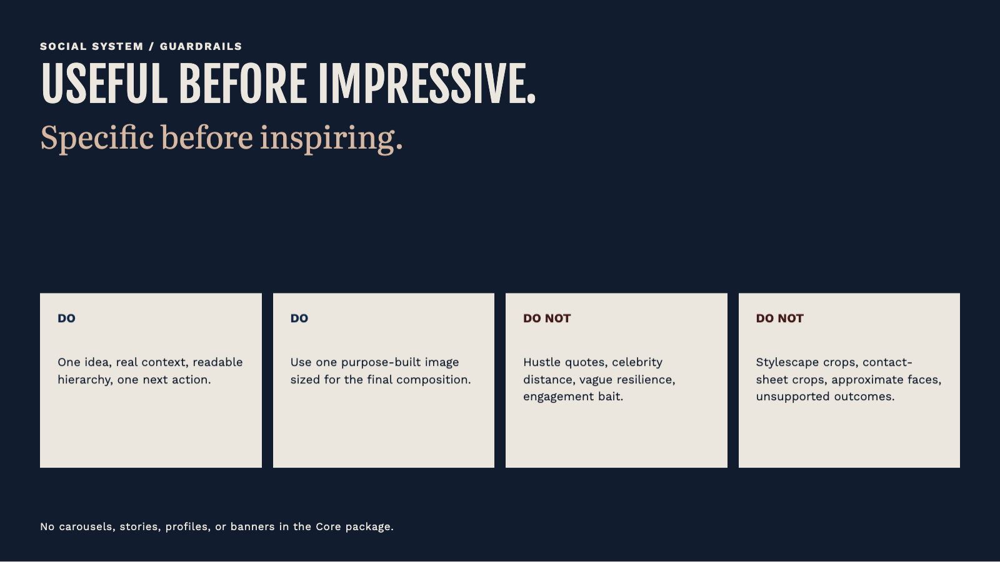
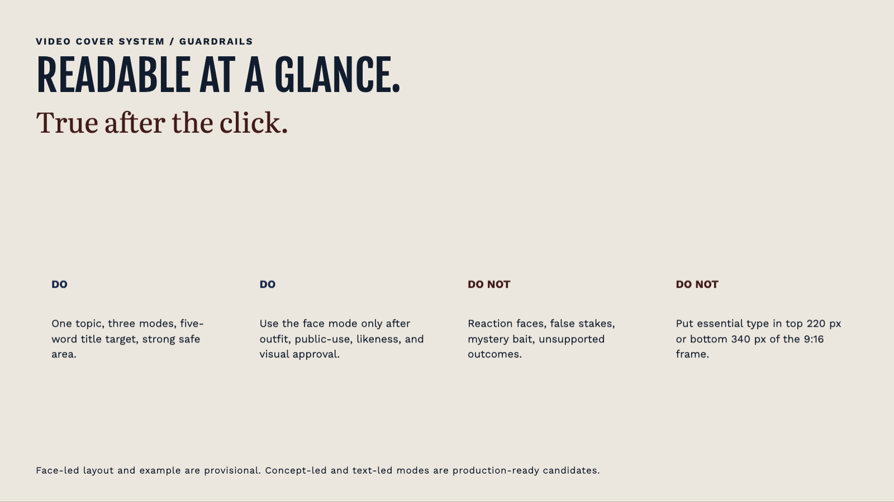

Gosder Cherilus Brand Therapy Guidelines
PublishedThis is the published, manifest-backed Guidelines artifact.
Strive and savor
Discipline that makes room for a full life. This is the short, forwardable read for people who need to understand how Gosder shows up and how to communicate the brand.
The human read, and the operating system
Start here when the job is to understand the person, the point of view, and the world around the work. Open the Brand Therapy OS when the job needs the full rules, templates, or AI context. These are two views of the same source, not two brands.
Five decisions that hold the brand together
Product
An inspiring example of resilience, devotion, and balance.
Gosder is the lived example. The work, the practice, and the fuller life it makes possible carry the message better than a single venture or a slogan.
People
Driven people looking for a tribe where ambition and enjoyment belong together.
The audience is made of doers carrying real pressure and responsibility. They want capable peers and permission to enjoy the life they are building.
Purpose
To create the conditions for more people to achieve and live fully.
The purpose is practical support, access, mentorship, community, and the conditions that let more people move forward. Claims require real evidence.
Promise
Strive and savor.
Work with devotion. Enjoy without guilt. Keep achievement and pleasure in the same honest frame.
Personality
A stoic Renaissance man with an Epicurean appetite for life.
Calm under pressure, serious about standards, and curious about culture, craft, people, pleasure, faith, and the full range of a life well lived.
How the brand looks
Life in Full uses Midnight Navy, Cobalt, Oxblood, Saddle Leather, and Gallery White. Fjalla One carries display moments, Work Sans carries the practical reading, and Literata brings warmth where a line needs it. The visual world is cultivated and specific, never luxury theater.
How the brand shows up
Use a real choice, practice, obstacle, or pleasure, then name what it shows. Show the person, the work, the people around it, and the life it makes possible. Do not invent outcomes, impact totals, endorsements, or credentials. A recognizable finished image needs its own exact review before delivery or publication.
For team, PR, and partners
Lead with specific scenes, earned advice, dry warmth, and cultural curiosity. Avoid guru energy, pain worship, luxury flexing, and empty motivation. Ventures are proof platforms beneath Gosder, not competing master brands.
Review boundary
This published version is the manifest-backed Guidelines artifact. The Brand Therapy OS remains a separate operating system.


